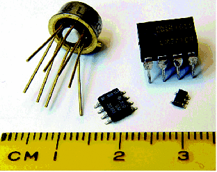

Figure 1: These ICs from my parts heap contain different chips. The metal can and DIP caterpillar date back to the dawn of ICs and are still available for some chips. The smaller SOIC and minuscule SOT23 packages show up in contemporary gizmos, with even smaller packages used in things like mobile phones.
Back to Article